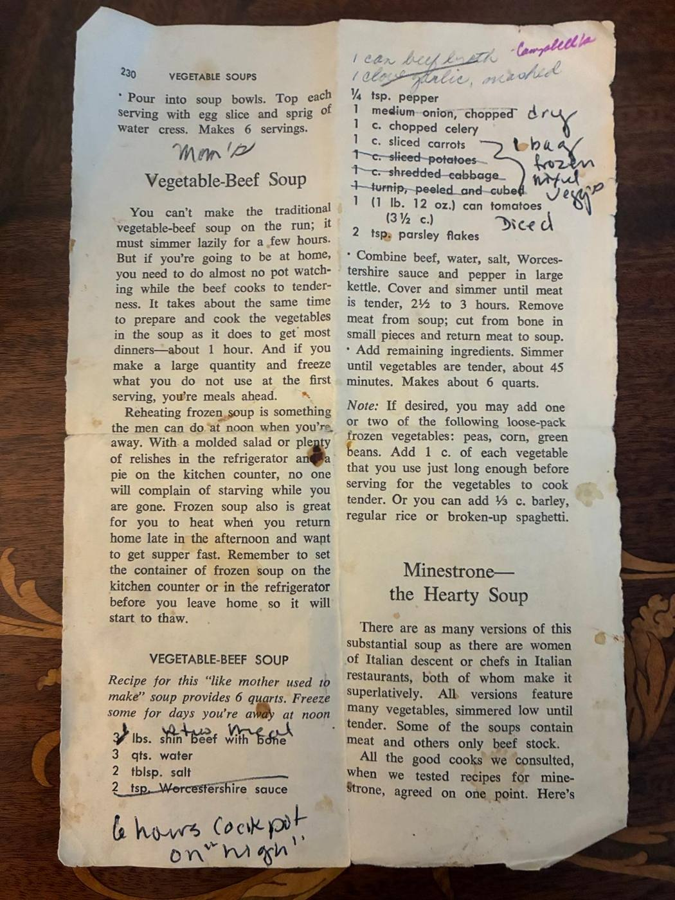

Mains
Vegetable-Beef Soup
From the kitchen of Mom
CookCrockpot on high
Time6 hr
Makes6 quarts

Mom's original card · tap to enlarge
Ingredients
Optional add-ins
Method tap a step to mark it done
- Put the stew meat, water, beef broth, salt, pepper, garlic, onion, frozen mixed vegetables, tomatoes and parsley flakes in the crockpot.
- Cover and cook on high for 6 hours.
- Optional: add the frozen peas, corn or green beans just long enough before serving for them to cook tender. Or add the barley, rice or broken-up spaghetti instead.